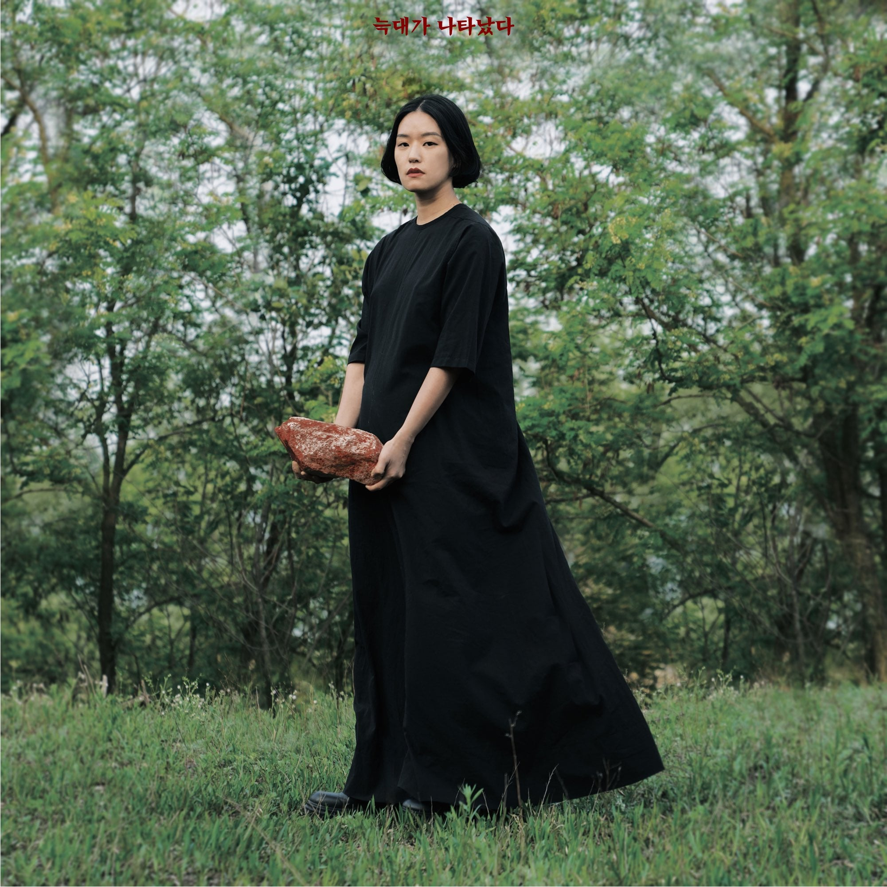

 이랑은 한국예술종합학교 영상원 영화과 졸업. 2011년 싱글 앨범 「잘 알지도 못하면서」로 데뷔, 2012년 정규 앨범 1집 「욘욘슨」, 2016년 정규 앨범 2집 「신의 놀이」를 발표했다. 지은 책으로 『이랑 네컷 만화』, 『내가 30代가 됐다』, 『대체 뭐하자는 인간이지 싶었다』 등이 있다. 단편영화, 뮤직비디오, 웹드라마 감독으로도 일하고 있다. 이랑은 본명이다.